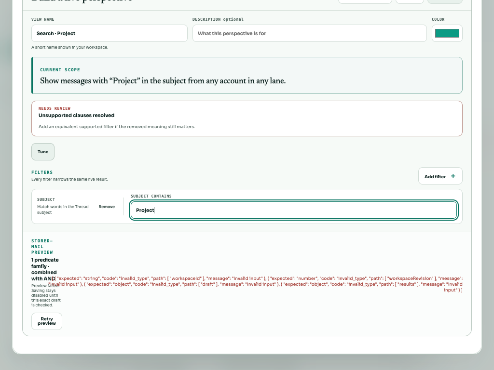

A malformed preview response generated a long schema diagnostic. The footer’s auto-sized error column consumed all available width, leaving the preview summary a zero-width track and causing text overlap. Two settled frames measured 0px 882px at Light1024.
The CSS-only fix uses two bounded, shrinkable columns and wraps long text inside their allocated space. The existing mobile single-column rule stays in effect. The complete error text, retry behavior, validation and save semantics are preserved.
Immutable two-frame RED · Durable checker fails on both baseline samples · Original commands · Prior cleanup.

Fixture classification: browser transport interception of POST preview with HTTP200 body {}. This is not evidence of a real backend outage. The original fixture was removed and real Retry recovered; no View was saved.
Browser checker and text-line geometry predicate assert the original overlap/escape conditions, full diagnostic equality, requested theme/viewport and real error/normal semantics. Retry is reached with native Tab; mobile stacking is measured.
The production build passed. All 12 real-browser cases passed: Light and Black × 1024×768, 1440×900 and 390×844 × malformed error and recovered normal footer. All 24 settled frames had positive preview width and no text overlap or escape. Every error frame retained the exact full baseline diagnostic and disabled Save; all six Retry controls were reached by native Tab with visible focus and correct hit target. Every normal frame showed the exact ready copy and enabled Save after removing the mock and activating real Retry. No View was saved.
Matrix result · Setup, route and recovery commands · Matrix runner · Build log · Workspace lint log · Gate receipts.
| Actual state | 1024 | 1440 | 390 mobile |
|---|---|---|---|
| light-error | Screenshot · Geometry | Screenshot · Geometry | Screenshot · Geometry |
| light-normal | Screenshot · Geometry | Screenshot · Geometry | Screenshot · Geometry |
| dark-error | Screenshot · Geometry | Screenshot · Geometry | Screenshot · Geometry |
| dark-normal | Screenshot · Geometry | Screenshot · Geometry | Screenshot · Geometry |
Baseline provenance binds the original RED to checkpoint c419252 and runtime d0b05f8. Final source/checker/asset hashes binds this CSS patch and the executed checker to the new production assets. The raw harness receipt retains historical hardcoded source labels; those labels are superseded by the actual hashes and are not F04 source proof.
Startup receipt and original OS35 failure preserve the first failed open and early connection probes. Subsequent same-session tab inspection and authenticated snapshot established readiness without a second browser, server or rebuild. Cleanup records successful route removal, browser/server exit 0, scratch removal and released ports.
This is a bounded CSS layout regression using actual browser text-line rectangles, not a simulated CSS unit test. Build retains the existing large-chunk warning. Hosted exact-head typecheck/unit tests are reported with the immutable commit separately. The fresh disposable session's appearance is scoped in cleanup; no external preference restoration is claimed. Broader BRE-387 native Undo and human usability gates remain separate.
{kind=link}
{kind=link}
{kind=link}
{kind=link}
{kind=link}
{kind=link}
{kind=link}
{kind=link}
{kind=link}
{kind=link}
{kind=link}
{kind=link}